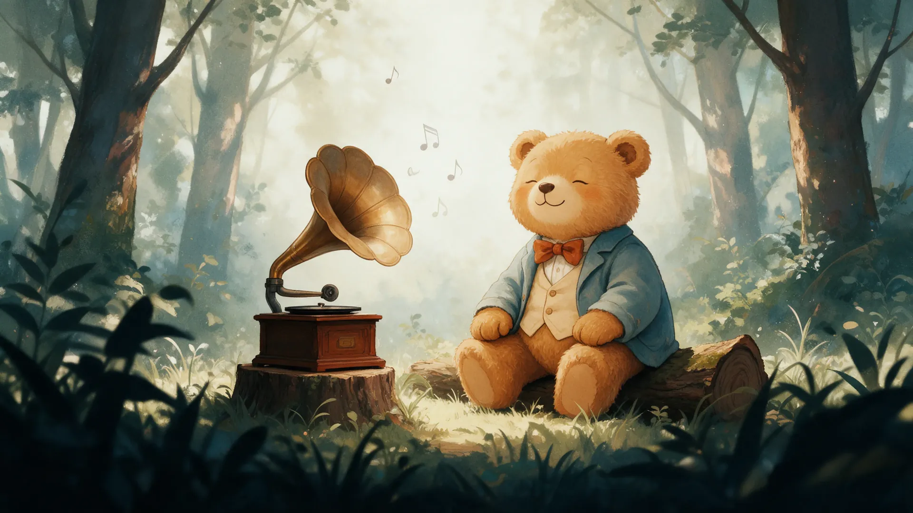
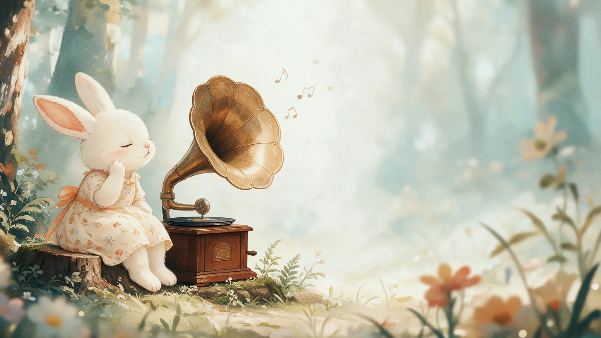
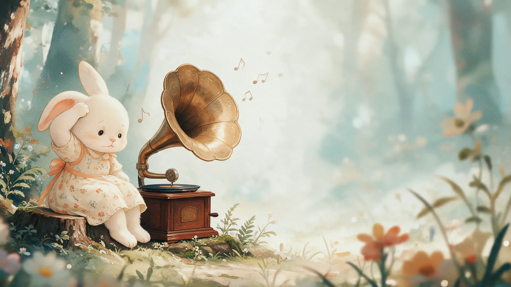
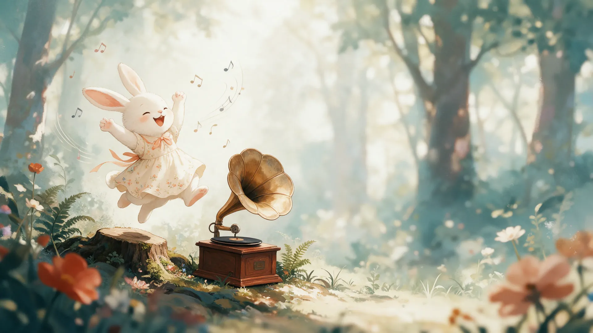
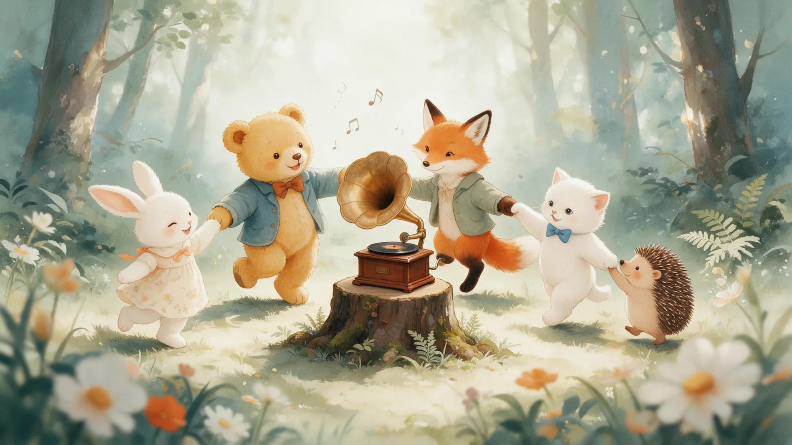

УгаДай меЛоДию
Слушайте и угадывайте произведения из «Детского альбома» Петра Ильича Чайковского



Как называется это произведение?

Вернуться в меню
Отличная работа! Кажется, теперь вы узнаете произведения Чайковского с первых нот
Все мелодии угаданы!
Угадай мелодию
1 / 6